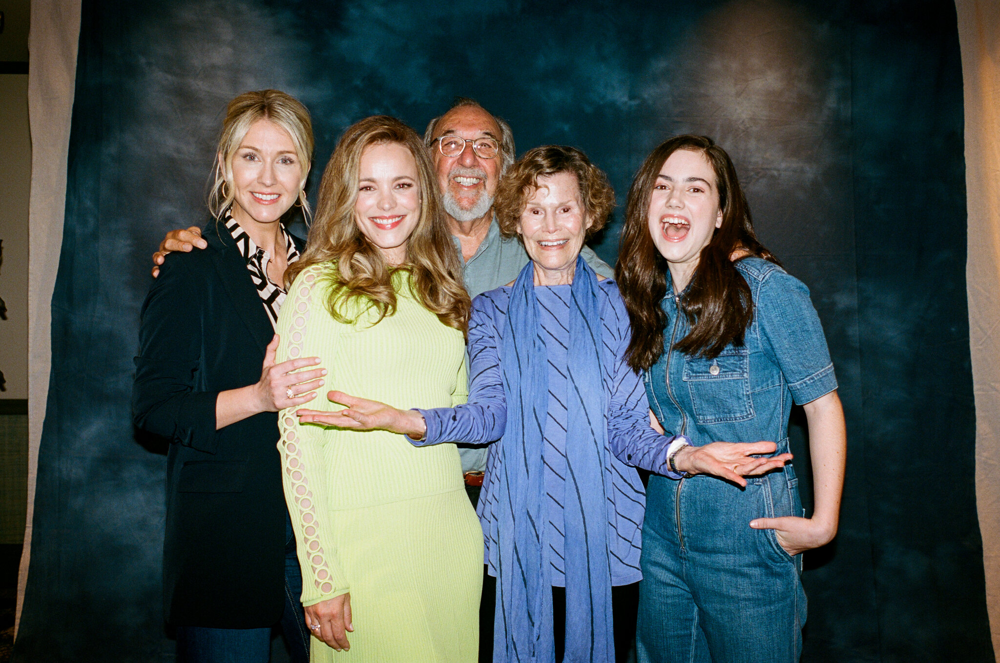

'Brooks, James L'
· 12 min read · Member-only

‘Are You There God? It’s Me, Margaret’: Beloved, Banned and Finally Adapted
Judy Blume’s 1970 novel hits the big screen at a difficult political moment for a story with themes of bodily autonomy and religious choice.
There is a moment that has happened millions of times for eons, and yet has rarely been captured on film: a 12-year-old girl wondering what to do when she gets her period. Judy Blume described it in print, in her seminal 1970 novel, “Are You There God? It’s Me, Margaret.” More than a half-century later, the movie adaptation, due April 28, is putting that awkward puzzling-through onscreen, as young Margaret practices inserting a pad in her underwear. It’s a scene that is so quietly revolutionary, it made the movie’s editor cry when she first saw the footage. There was just this sense, said the movie’s writer-director, Kelly Fremon Craig: “Oh my gosh, we have never been allowed to show this.” Filming it “felt like some sort of release of the shame and embarrassment around it.” Menstruation, burgeoning sexuality and fraught gender dynamics, religion, the barefoot-in-the-sprinkler joys and gossip-twisted tribulations of girlhood: “Are You There God? It’s Me, Margaret” tracks it all, and has been both banned and beloved for it.